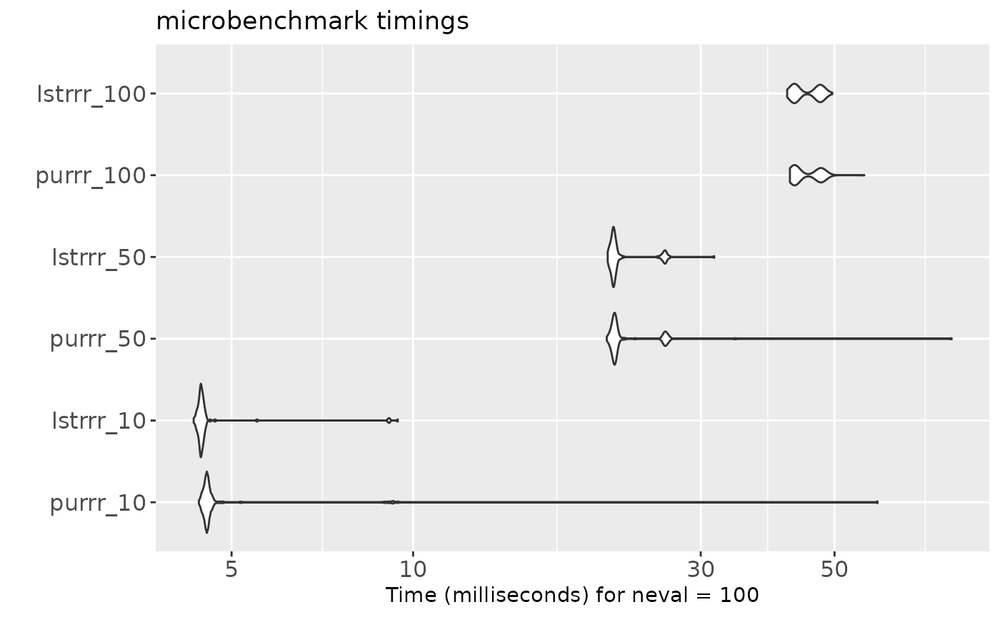
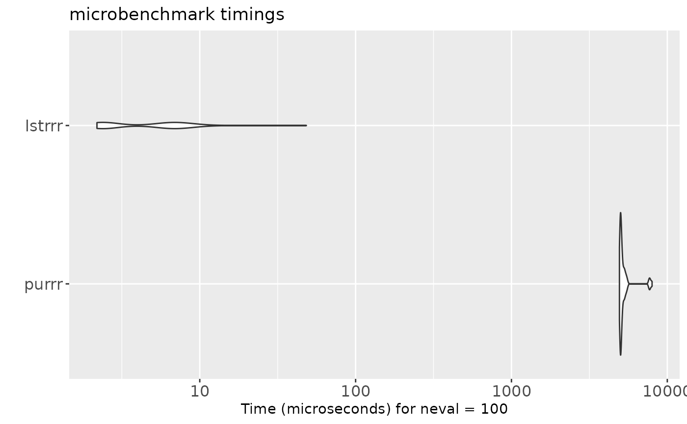
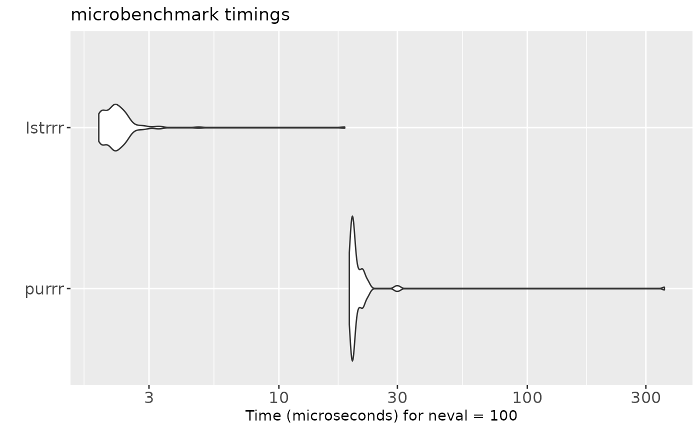
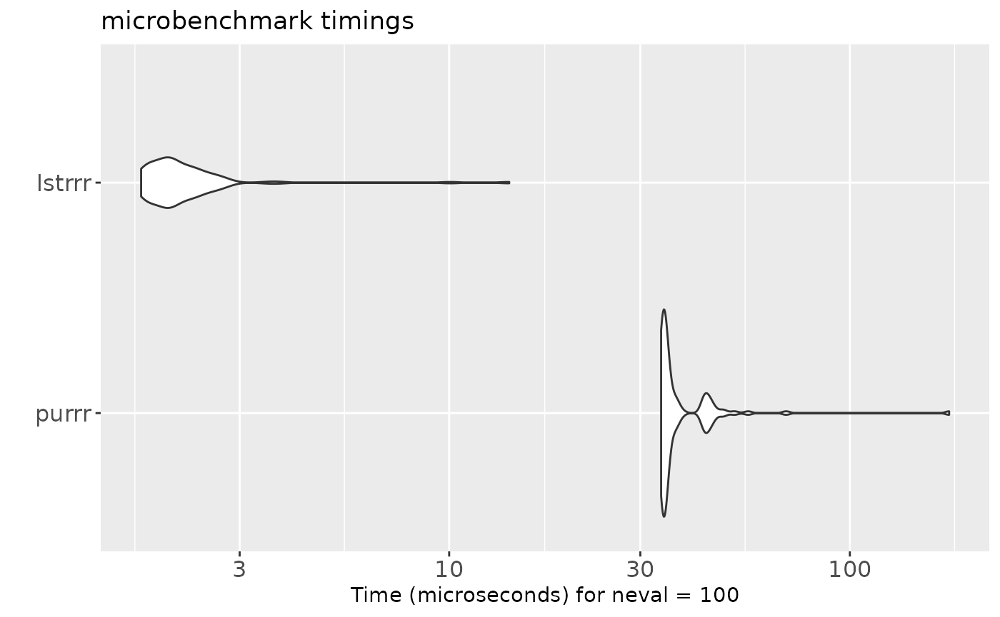
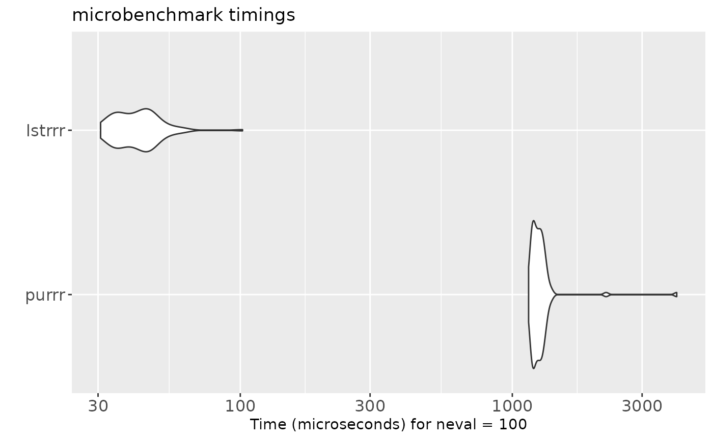
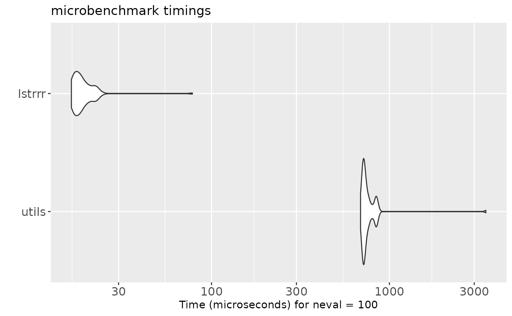
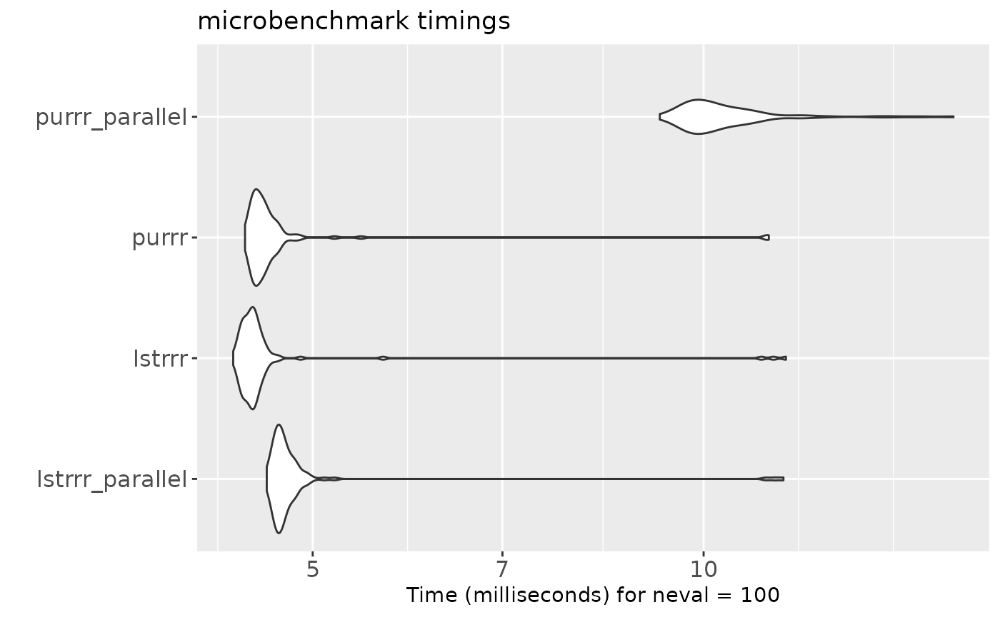

Map & Walk
Here, we will use a simple example to illustrate the performance
difference of lstrrr.
files <- list.files(all.files = TRUE, recursive = TRUE)
files_list <- dir_listwise(files)
slow_string_op <- function(x, n = 10) {
stopifnot(is.character(x))
out <- x
for (i in seq_len(n)) {
out <- paste0(
rev(strsplit(out, "", fixed = TRUE)[[1]]),
collapse = ""
)
out <- toupper(out)
out <- tolower(out)
}
out
}
set.seed(123)
bench_map <- microbenchmark::microbenchmark(
purrr_10 = {
purrr::walk(files, \(x) slow_string_op(x))
},
lstrrr_10 = {
list_walk(files_list, \(x) slow_string_op(x))
},
purrr_50 = {
purrr::walk(files, \(x) slow_string_op(x, n = 50))
},
lstrrr_50 = {
list_walk(files_list, \(x) slow_string_op(x, n = 50))
},
purrr_100 = {
purrr::walk(files, \(x) slow_string_op(x, n = 100))
},
lstrrr_100 = {
list_walk(files_list, \(x) slow_string_op(x, n = 100))
}
)
print(bench_map)
#> Unit: milliseconds
#> expr min lq mean median uq max neval
#> purrr_10 4.413098 4.519794 5.335495 4.551298 4.587898 58.925036 100
#> lstrrr_10 4.326203 4.428137 4.651793 4.450660 4.485107 9.434403 100
#> purrr_50 20.953109 21.478680 23.209162 21.640026 22.104470 78.207777 100
#> lstrrr_50 21.026992 21.405317 22.379381 21.529590 21.777024 31.584365 100
#> purrr_100 42.170527 42.909332 44.953505 43.247391 47.422455 56.037036 100
#> lstrrr_100 41.726338 42.903599 45.035032 43.325865 47.320591 49.573573 100
ggplot2::autoplot(bench_map) +
ggplot2::theme(axis.text = ggplot2::element_text(size = 12))
#> Warning: `aes_string()` was deprecated in ggplot2 3.0.0.
#> ℹ Please use tidy evaluation idioms with `aes()`.
#> ℹ See also `vignette("ggplot2-in-packages")` for more information.
#> ℹ The deprecated feature was likely used in the microbenchmark package.
#> Please report the issue at
#> <https://github.com/joshuaulrich/microbenchmark/issues/>.
#> This warning is displayed once per session.
#> Call `lifecycle::last_lifecycle_warnings()` to see where this warning was
#> generated.
Detect Depth
set.seed(124)
bench_depth <- microbenchmark::microbenchmark(
purrr = {
purrr::pluck_depth(sputnik_1)
},
lstrrr = {
list_depth(sputnik_1)
}
)
print(bench_depth)
#> Unit: microseconds
#> expr min lq mean median uq max neval
#> purrr 4930.619 4999.6695 5288.52755 5056.2840 5246.5280 7985.417 100
#> lstrrr 2.189 2.3915 5.51545 5.6385 7.1365 48.328 100
ggplot2::autoplot(bench_depth) +
ggplot2::theme(axis.text = ggplot2::element_text(size = 12))
Assignment
set.seed(125)
bench_assign <- microbenchmark::microbenchmark(
purrr = {
purrr::list_assign(sputnik_1, z = list(a = 1:5))
},
lstrrr = {
list_set(sputnik_1, c("z"), list(a = 1:5))
}
)
print(bench_assign)
#> Unit: microseconds
#> expr min lq mean median uq max neval
#> purrr 19.210 19.6860 24.01126 19.929 21.1455 356.272 100
#> lstrrr 1.884 2.0185 2.40193 2.182 2.3695 18.410 100
ggplot2::autoplot(bench_assign) +
ggplot2::theme(axis.text = ggplot2::element_text(size = 12))
Modification
set.seed(126)
bench_modify <- microbenchmark::microbenchmark(
purrr = {
purrr::list_modify(sputnik_1, test_branches = list(null_leaf = 1:5))
},
lstrrr = {
list_set(sputnik_1, c("test_branches", "null_leaf"), 1:5)
}
)
print(bench_modify)
#> Unit: microseconds
#> expr min lq mean median uq max neval
#> purrr 33.806 34.139 38.63983 34.6805 37.0215 176.941 100
#> lstrrr 1.703 1.872 2.31700 2.0245 2.3050 14.125 100
ggplot2::autoplot(bench_modify) +
ggplot2::theme(axis.text = ggplot2::element_text(size = 12))
Flatten
set.seed(127)
bench_flatten <- microbenchmark::microbenchmark(
purrr = {
purrr::list_flatten(sputnik_1)
},
lstrrr = {
list_flatten(sputnik_1)
}
)
print(bench_flatten)
#> Unit: microseconds
#> expr min lq mean median uq max neval
#> purrr 1147.875 1193.362 1280.77041 1238.8065 1288.0700 4022.542 100
#> lstrrr 30.659 35.386 42.44384 41.5735 46.6325 101.952 100
ggplot2::autoplot(bench_flatten) +
ggplot2::theme(axis.text = ggplot2::element_text(size = 12))
modifyList
set.seed(128)
foo <- sputnik_1
foo$test_branches$empty_branch$score <- 1e-256
bench_modify_list <- microbenchmark::microbenchmark(
utils = {
utils::modifyList(sputnik_1, foo)
},
lstrrr = {
modify_list(sputnik_1, foo)
}
)
print(bench_modify_list)
#> Unit: microseconds
#> expr min lq mean median uq max neval
#> utils 688.225 712.428 774.88010 726.3845 767.0370 3488.774 100
#> lstrrr 16.285 17.095 19.30276 18.1090 20.0385 78.015 100
ggplot2::autoplot(bench_modify_list) +
ggplot2::theme(axis.text = ggplot2::element_text(size = 12))
Parallel Computation
Most of logic is in C implementation, so the acceleration is not that obvious.
set.seed(129)
mirai::daemons(3L)
crate <- purrr::in_parallel(
\(x) {
slow_string_op(x, n = 10)
},
slow_string_op = slow_string_op
)
fn <- function(x) {
slow_string_op(x, n = 10)
}
bench_parallel <- microbenchmark::microbenchmark(
lstrrr_parallel = {
list_map(files_list, crate)
},
lstrrr = {
list_map(files_list, fn)
},
purrr = {
purrr::map(files, fn)
},
purrr_parallel = {
purrr::map(files, crate)
}
)
mirai::daemons(0L)
print(bench_parallel)
#> Unit: milliseconds
#> expr min lq mean median uq max neval
#> lstrrr_parallel 4.609078 4.686935 4.951242 4.733194 4.810773 11.52125 100
#> lstrrr 4.342726 4.431280 4.707231 4.490182 4.533817 11.57224 100
#> purrr 4.434767 4.507450 4.722065 4.558922 4.631694 11.22545 100
#> purrr_parallel 9.252839 9.783129 10.397968 10.134358 10.629319 15.57657 100
ggplot2::autoplot(bench_parallel) +
ggplot2::theme(axis.text = ggplot2::element_text(size = 12))